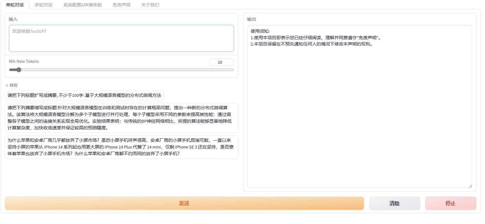
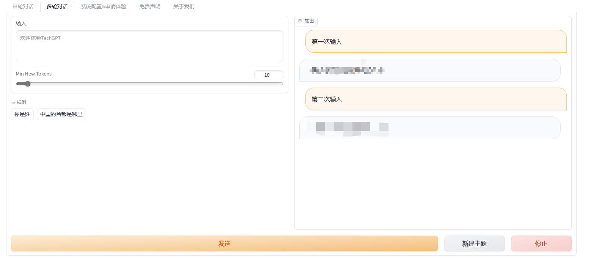
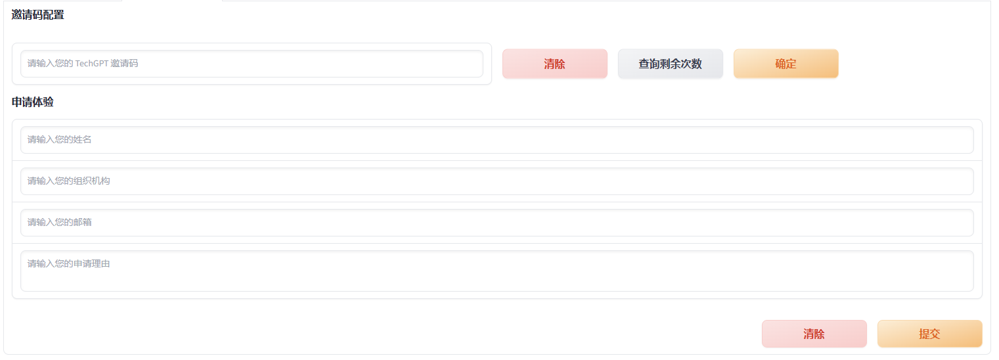

Introduce a simple Flask API project code for large language model interaction.
Background
前段时间在我们自己的语料上微调大模型，在基本完成训练之后，我们需要将模型上线供他人使用，然而我还没正式工作过，更没系统地学习过后端开发，通过结合自己的编码经验和搜索引擎，初步完成了一份主要针对这类模型交互，或者以用户输入来获取信息的场景的后端系统，以API接口的方式对前端提供服务。
由于前端是另一名同学开发的，因此这里不做分享，但只要简单查看我所提供的代码，删除前端的同学也能非常快速地完成相关交互控件的编写。
项目目前已经开源：abel-nlp/model-call-backend-api
Introduction
项目结构:
- api.py 主要交互逻辑的文件，负责为前端提供api调用，以及对不同调用维护相应数据库；
- model.py 模型文件，为了避免每次api和数据库交互修改都要重新载入模型，而LLM每次载入的时间很长，因此将模型独立出来，形成自己的接口，一次部署，多次使用，极少下线；
- utils.py 一些功能函数，包括整理用户输入的函数、邮件地址验证和自动发送邮件的相关配置；
- ban.txt 违禁词的列表，每个违禁词为一行，避免用户随便问问题，恶意套取和截图模型的输出
基本流程：
首先确保环境搭好，数据库的表建立完毕
- 运行
model.py，将模型挂载到显存中，其中的api接口只负责接收输入，并返回模型的输出，此外不操作数据库，因此上线后只要不是改模型和接口参数，则后期维护都不需要下线； - 运行
api.py，后续只需要等待前端对不同功能的调用即可，有任何需要修改的地方，下线和重新部署也非常快。
主要功能：
单轮对话：用户每次的问题对模型而言都是新的问题，模型不需要上下文，只关心本次对话并回答，适合临时和偶尔询问模型；
多轮对话：用户在一次对话行为中，每次输入的对话对模型而言都是需要记住的；
敏感词检测：原因正如上面提到的那样；
用户注册和自动邮件发送：当用户提交注册后，相关的注册信息会先经过验证，如果没有注册过，则会生成随机的key作为邀请码，并自动地发送包含邀请码的邮件；
邀请码管理：检测邀请码是否存在，剩余使用次数和过期时间等；
恶意使用封禁：针对短期高频使用者(往往是爬虫或DDoS攻击)，会进行一定程度上的封禁；
免费用户管理：对于没有邀请码的用户，提供每天6次的免费体验，24小时后自动刷新
主要环境
- python3 + Ubuntu + mysql8
- pymysql
- flask
- DBUtils
Details
代码具体的细节可以在项目仓库里面查看，这里只概要地描述一些核心部分。
数据库的操作：
因为是以接口的形式提供，自然而然地将数据库连接当作全局变量来提供了，即：
pool = PooledDB( creator=pymysql, maxconnections=20, blocking=True, host='localhost' # 或服务器地址, port=3306, # 按实际端口输入，默认3306 user='xxx', password='xxxx', database='xxxx', charset='utf8mb4', ping=2 ) conn = pool.connection()1
2
3
4
5
6
7
8
9
10
11
12
13
14
15
16
17
18
19
20
21
22
23
24
25
26
27
28
29
- 然而，这种方式会强行将数据库缓存读到内存，之后即便显式地**commit**，也无法将修改和变动写入本地数据库，除非调用**conn.close()**，但这样需要在每个操作数据库的语句处都进行调用，而且还得重启连接，反而增加了数据库和代码编写的负担。
- 因此，将`conn = pool.connection()`去除，所有的数据库操作抽象出来，以函数的形式提供，这样即不需要重复地进行try except判断，也不需要反复进行冗余的连接与断开操作（因为函数内部都做了）；
- 当然，还可以控制mysql，强制不使用它的缓存，但对于我们这个小项目而言，这种方式并无不妥。具体来说，主要抽象了这五个函数：

- **get_conn()**负责数据库连接；**get_cursor()**提供连接后的游标；**close_conn()**负责断开连接；有了这三个基本操作后，将数据库的查询类操作包装为**query()**函数，将更新和插入操作打包为**insert()**函数，则后面再设计数据库操作时，只需要配合这两个函数就行。
- 接下来以注册为例来说明：
- 首先建立**invite**表：
- ```mysql
CREATE TABLE invite (
invite_key VARCHAR(36) PRIMARY KEY,
ip_address VARCHAR(30),
user_name VARCHAR(50),
email VARCHAR(255),
institution VARCHAR(255),
apply_reason VARCHAR(255),
register_time TIMESTAMP NOT NULL,
expire_time TIMESTAMP NOT NULL,
left_count INT DEFAULT 999 NOT NULL,
is_activated BOOL DEFAULT FALSE NOT NULL
);该表的设计逻辑在于：invite_key是主键，邀请码，用于验证用户身份，其中expire_time和left_count共同控制用户使用，如果用户使用的时间已经超过过期时间，则无论剩下次数是多少都无法再使用，而在可用期间，只要剩余次数不为0，则可以继续使用，并且每次调用模型都会减少一次次数。
那么注册的代码就可以这样写：
1
2
3
4
5
6
7
8
9
10
11
12
13
14
15
16
17def register(ip_, name_, mail_, inst_, rea_):
ip_query = "SELECT COUNT(*) FROM invite WHERE ip_address=%s"
mail_query = "SELECT COUNT(*) FROM invite WHERE email=%s"
if query(ip_query, ip_)[0] >= 3 or query(mail_query, mail_)[0] > 0:
# 该email已经注册过 或者 ip注册过3次
return -1
else:
key_ = generate_key()
init_count = 500
time_delta = datetime.timedelta(days=30)
sql = "INSERT INTO invite (invite_key, ip_address, user_name, " \
"email, institution, apply_reason, " \
"register_time, expire_time, left_count, is_activated) VALUES (%s, %s, %s, %s, %s, %s, %s, %s, %s, FALSE)"
now = datetime.datetime.now()
expire = now + time_delta
insert(sql, key_, ip_, name_, mail_, inst_, rea_, now, expire, init_count)上面代码删除了很多判断语句和与注册无关的语句（完整的可以看代码仓库）；可以看到，在具体的操作，例如以ip和email为条件来查询数据库，或者将邀请码等信息插入到invite表中，都可以用**query(sql, *args)或insert(sql, &args)**的方式简便地操作数据库
当然，这种方式的缺点也很明显，就行对于上线后的场景，假设我作为用户拥有500次的调用权限，那么每次查询模型都需要直接操作数据库，当人数变多后，将会增加数据库的负担。因此这种只改变次数的操作可以先在缓存中操作，等到一定时间再一次性地写入本地数据库中。但因为我们面向的并不是大规模用户群体，主要目的还是实验和测试大模型，甚至还需要在后台操作数据库，且就只有两天时间开发，因此选择了这种方式。
邀请码产生
这个部分非常简单，可替代得方案也非常多，例如MD5加密等，我在这里选择了相对最简单的一种方式：随机数
只要随机数够长，就能尽可能避免邀请码重复，但光有数字肯定是不行的，因此这样来写：
1
2
3
4
5
6
7
8import string
import secrets
def generate_key():
length = 36
chars = string.ascii_letters + string.digits
key = ''.join(secrets.choice(chars) for _ in range(length))
return keysecrets库是一个python的标准库模块，用于生成安全的随机数以及密码。使用该库可以生成高强度的、随机的数字、字母和符号组成的字符串，这些字符串可以用作密码、令牌等敏感信息的安全存储，这里先得到一个字符集合：数字和全部字母的集合，再让该库生成给定长度的组合
假设这次运行了该代码，得到了：
eHz4qZziyTqoeYkrhVvORJ0wN4FO1aSgkcQB作为邀请码（随机的）当然，还有其他简答方法，如直接调用**secrets.token_bytes(16)得到类似：
b'\x8d\t\xf1j\xf8\xae\xae\xe0\x7f\x897\x06\xe5\xdd\xe0|'的长16的随机字节序列；调用：secrets.token_hex(20)**得到长20的随机密码：6ad82b2535acab5afc14601096157fff4d318f77
自动邮件发送：
邮件发送主要使用了以下的库：
1
2
3
4import re
import smtplib
from email.header import Header
from email.mime.text import MIMEText这个说起来比较复杂，所以直接说实现，这里的实现是以QQ邮箱为例的，而其他邮箱，如Gmail等也支持该操作，但是授权码、协议和端口则不一样；
在我们这个场景中，发送邮件的逻辑是：
- 用户注册，验证邮箱，产生验证码；
- 将用户注册的信息，转发到某个邮箱2上，这个转发的过程是由邮箱1承担的；
- 邮箱2由人工审核，决定是否将该邀请码发送给注册者；
那么这就有两个问题：邮箱1和2可不可以是同一个？以及每次都要由邮箱2人工审核是不是非常麻烦？对于第一个问题，是可以同一个的，自己给自己发没有问题；对于第二个问题，其中自动发送时，不转发给邮箱2，而是直接发送给注册者就行，但是在我们这里是为了，或者说不得不审核，所以才这样。那么怎么才能简化操作呢？
这就用到了mailto机制，在html和markdown中有很多这种应用，就是自己点了一下某个邮箱，他就自动跳转到发邮件的地方了，甚至收件人和主题都写好了，那么这里也用了该方法，当邮箱2收到转发的消息后，只要同意，只需要点击连接，就自动生成了发送稿，包括注册用户的邮箱、回信和回复的邀请码。
具体实现可以直接看代码:
1
2
3
4
5
6
7
8
9
10
11
12
13
14
15
16
17
18
19
20
21
22
23
24
25
26
27
28
29
30
31
32
33
34
35
36
37
38
39
40
41
42receiver = "xxx" # 邮件2
sender = 'xxx' # 邮件1
mail_pass = 'xxxxx' # QQ邮箱授权码，不明白请自行查询
smtp_server = 'smtp.qq.com'
smtp_port = 465
# 验证注册邮箱是否合格，其实这个应该是前端在输入框中限制的，因此这里只是写出来而已
def validate_email(mail_):
pattern = r'^[a-zA-Z0-9._%+-]+@[a-zA-Z0-9.-]+\.[a-zA-Z]{2,}$'
if re.match(pattern, mail_):
return True
else:
return False
def send_mail(user_, mail_, rea_, key_, rec_=receiver):
"""
:param user_: 注册用户的名字
:param rec_: 决定是否发消息的人
:param mail_: 注册用户的email
:param rea_: 注册用户的申请理由
:param key_: 自动生成的key
:return: Bool
"""
approve = f"<a href='mailto:{mail_}?subject=TechGPT申请通过&body={user_}您好，" \
f"您的TechGPT申请已经通过，这是您的邀请码：{key_}>"
body_ = f"您好，我是{user_}. \n我申请的理由是：{rea_}, 如果您同意，请直接点击下面链接发送消息: \n{approve}"
msg = MIMEText(body_, 'plain', 'utf-8')
msg['Subject'] = Header(f"{user_} 申请使用TechGPT", 'utf-8')
msg['From'] = sender
msg['To'] = Header(rec_, 'utf-8')
try:
smtp = smtplib.SMTP_SSL(smtp_server, smtp_port)
smtp.login(sender, mail_pass)
smtp.sendmail(sender, rec_, msg.as_string())
except smtplib.SMTPException as e:
print('邮件发送错误: ', e)
return False
return True上面的body就是利用mailto方式完成的邮件主体。当然了，还可以使用类似激活邮件的方式完全自动审核，也是非常容易的，可以自行设计，真的非常简单！
注意：不要用自己的QQ邮箱正式使用，测试可以用，最好申请临时的，或者专用的，避免因大量转发邮件被封号。
其他：
除了上面的，还有很多操作，但都比较简单，这里只简述一下flask接口
- 一般只需要flask包就完成了，但我们这里设计用一个接口调另一个接口（api.py调model.py），因此还需要用到requests包，不过都非常简单。
以上为草稿，未完成，待续（下班）
Personal blog, please do not repost.
Author: abel-neko